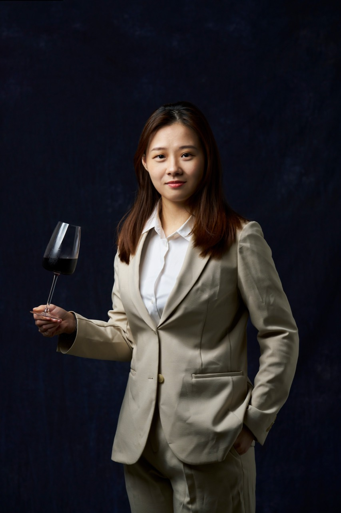

A darker translucent overlay lets the old-bar atmosphere stay alive while the modern portfolio copy remains readable. The image becomes lighting, not noise.
這一段把「走進酒吧後先到領台」當成隱喻。正式版本會換成你的 host stand 素材；現在先用現有圖測試文字密度、遮色片、古典與現代的比例。
文字保持乾淨、清楚；背景負責氣氛，不承擔資訊。

小分頁讓手機版不用滑太久，桌面版也不會太空。正式版本可以把你的工作台/帳本素材放在這一區，並用暗色遮色片控制閱讀清晰度。
Preview note
這頁只是視覺方向測試，不會取代正式首頁。